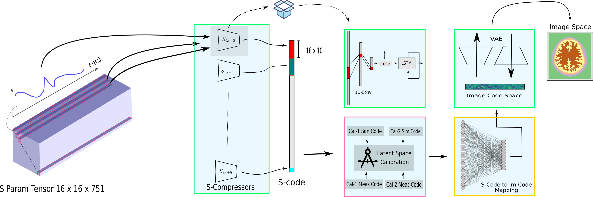

March 2021
Wide-band electromagnetic Imaging Paradigm

A leap in performance of electromagnetic imaging is featured by the proposed tripartite imaging
paradigm that utilizes deep learning. The new paradigm is implemented in context of brain imaging and
is tested on clinical data.
Graph formulation of the microwave imaging array is proposed.
The architectures proposed is made cognizant of the physical setup,
allowing it to incorporate the symmetries, resulting in a less data requirements.
Graph convolution and attention mechanism is deployed to handle the cases of fully-connected graphs corresponding to multi-static arrays. The graph-treatment of the problem is evaluated on experimental setup in context of brain anomaly localization with microwave imaging.
Incorporating boundaries of the imaging object as a priori information to imaging algorithms can significantly
improve the performance of electromagnetic medical imaging systems. To avoid overly complicating the system
by using different sensors and the adverse effect of the subject's movement, a learning-based method is proposed
to estimate the boundary (external contour) of the imaged object using the same electromagnetic imaging data.
While imaging techniques may discard the reflection coefficients for being dominant and uninformative for imaging,
these parameters are made use of for boundary detection.
The learned model is verified through independent clinical human trials by using a head imaging system
with a 16-element antenna array that works across the band 0.7-1.6 GHz.
The evaluation demonstrated that the model achieves average dissimilarity of 0.012
in Hu-moment while detecting head boundary. The model enables fast scan and image
creation while eliminating the need for additional devices for accurate boundary estimation.
Bringing deep learning techniques to electromagnetic imaging is of interest considering its great
success in various fields. Deep neural nets however are known for being data hungry machines,
and in many practical cases, such as electromagnetic medical imaging, there is not enough to feed them.
Scarcity of data necessitates reliance on simulations to generate a sufficiently large dataset for
deep learning to perform any complicated task. Simulations however, can not perfectly represent real
environments and therefore, any neural net trained on simulation data will invariably fail when evaluated on real data.
This work customizes a deep domain adaptation technique for matching distributions of complex-valued electromagnetic data.
We demonstrate the advantage of using complex-valued models over regular ones.
An operational neural network trained on simulation data and adapted to practical data to perform brain injury
localization is presented.